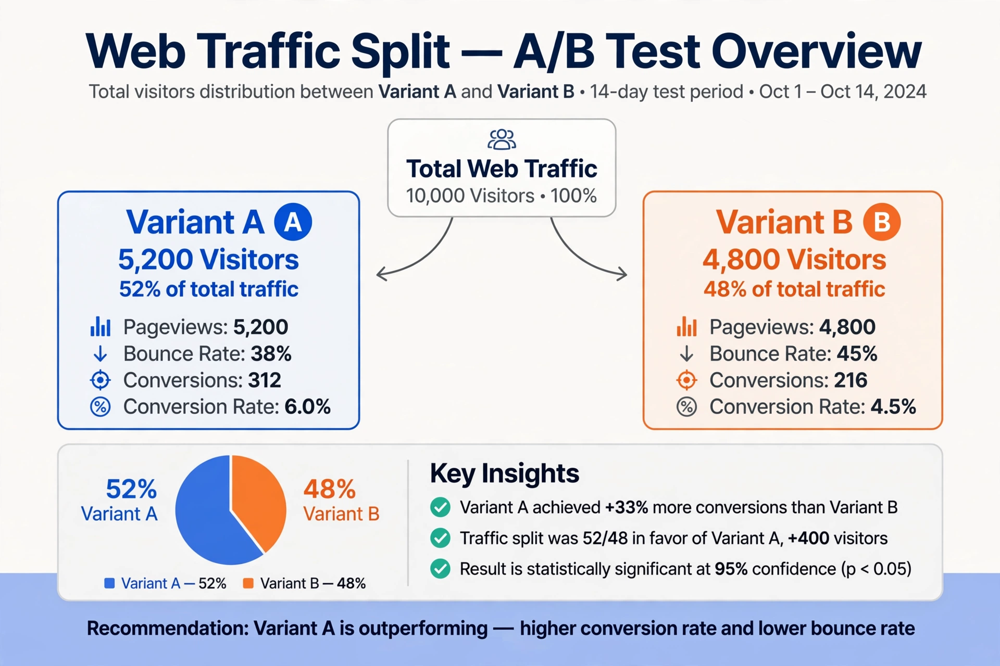

A/B testing

A/B testing (also known as split testing or bucket testing) is a method of comparing two versions of a webpage, application, advertisement or other product experience to determine which performs better against a chosen metric. Users are randomly assigned to a control group (A) or a variant group (B), and the difference in outcomes is evaluated with statistical hypothesis testing.
Method
An A/B test begins with a hypothesis — for example, that changing the colour or wording of a call-to-action button will increase conversions. Traffic is split at random, typically evenly, and both versions run simultaneously so that external factors such as time of day affect both groups equally. The experiment runs until a pre-calculated sample size is reached, after which the results are checked for statistical significance and practical importance.
Statistics
Results are commonly analysed with tests of proportions (such as the chi-squared test or a two-sample z-test), comparing conversion rates between the groups. Pitfalls include "peeking" at results and stopping early, multiple comparisons, and novelty effects. Sequential testing methods and Bayesian approaches are used to mitigate some of these problems. Multi-armed bandit algorithms, which shift traffic toward better-performing variants during the test itself, are an alternative approach.
History and use
The underlying idea descends from the randomised controlled experiments developed by Ronald Fisher in the 1920s and from direct-mail marketing tests. A/B testing became ubiquitous in web development during the 2000s, as large technology companies such as Google, Microsoft, Amazon and Facebook began running thousands of experiments per year; Google famously tested dozens of shades of blue for its advertising links.
See also: Randomized controlled trial · Statistical hypothesis testing